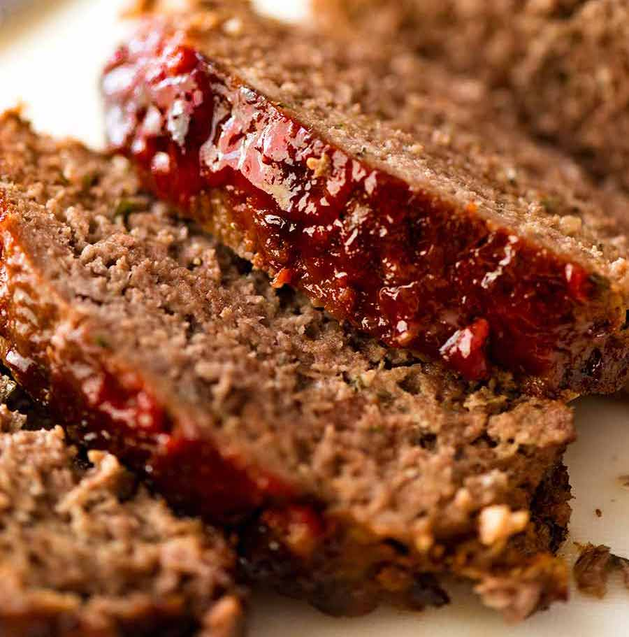

Meatloaf

Description
A classic meatloaf recipe glazed with a homemade sauce. Your mom already asked for the recipe to this one so don't just take my word for it, this is a great, simple dish for anyone.
Ingredients
- 1/2 cup ketchup
- 1/3 cup brown sugar
- 1/4 cup lemon juice, divided
- 1 teaspoon mustard powder
- 2 pounds ground beef
- 3 slices bread, broken up into small pieces
- 1/4 cup chopped onion
- 1 egg, beaten
- 1 teaspoon beef bouillon granules
Steps
- Preheat oven to 350 degrees F
- In a small bowl, combine 1 tablespoon lemon juice, mustard powder, brown sugar, and ketchup.
- In a separate larger bowl, combine remaining lemon juice, egg, onion, ground beef, bread, bouillon, and 1/3 of the ketchup mixture made in the previous step. Place in a 5x9 inch loaf pan.
- Bake for 1 hour, drain excess fat, coat with rest of ketchup mixture, and bake for 10 more minutes.